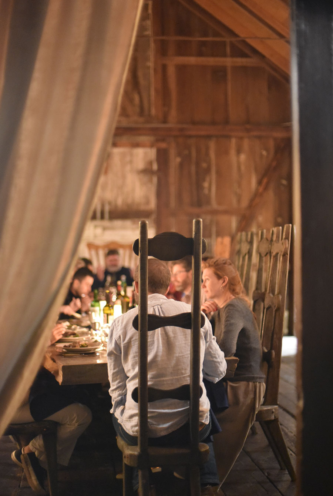
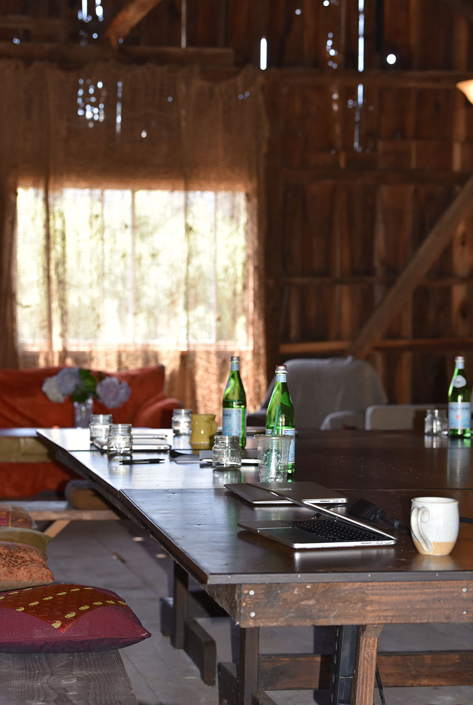
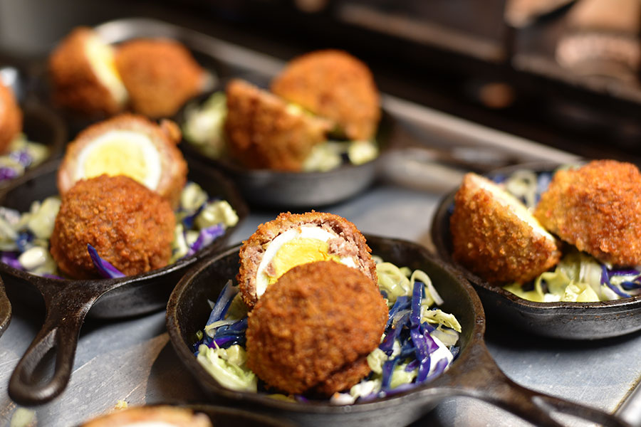
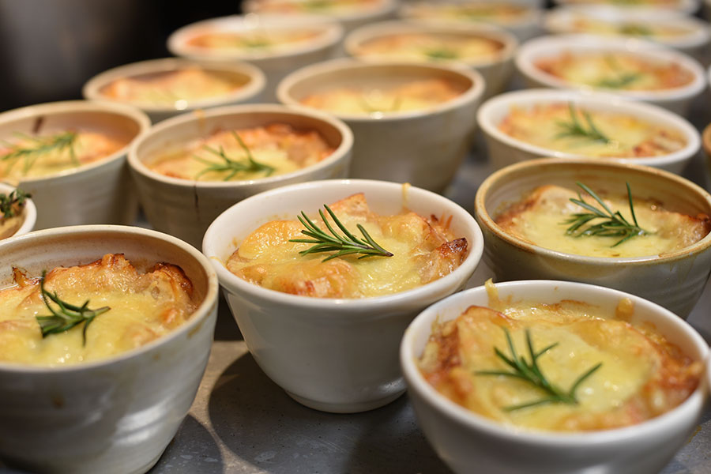
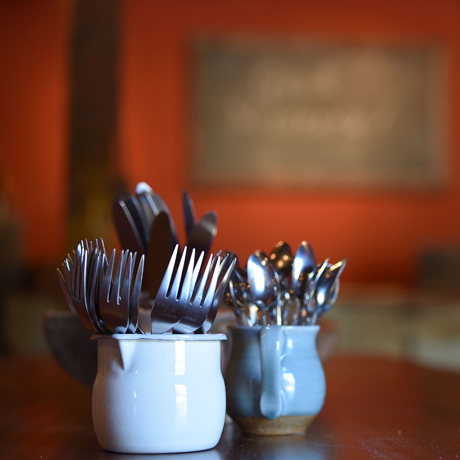
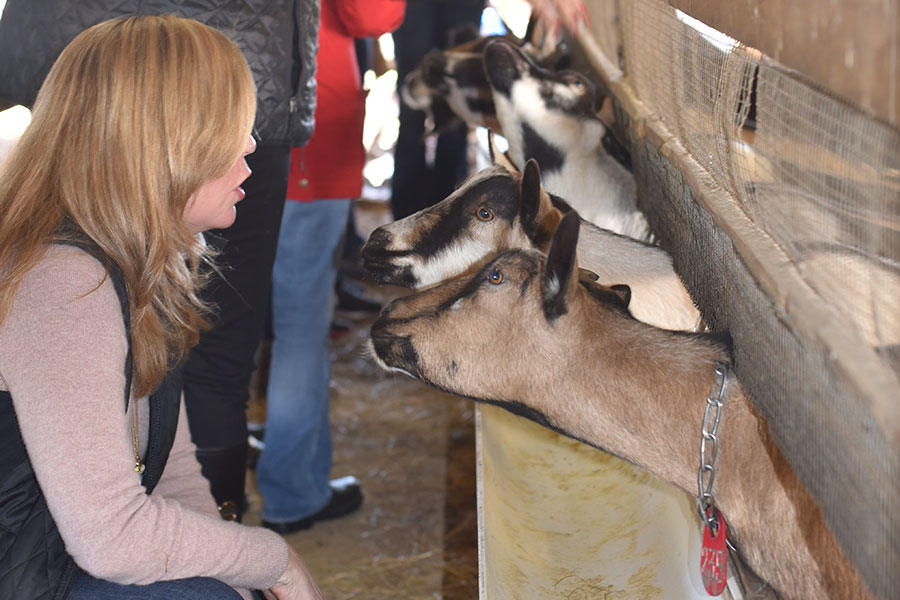
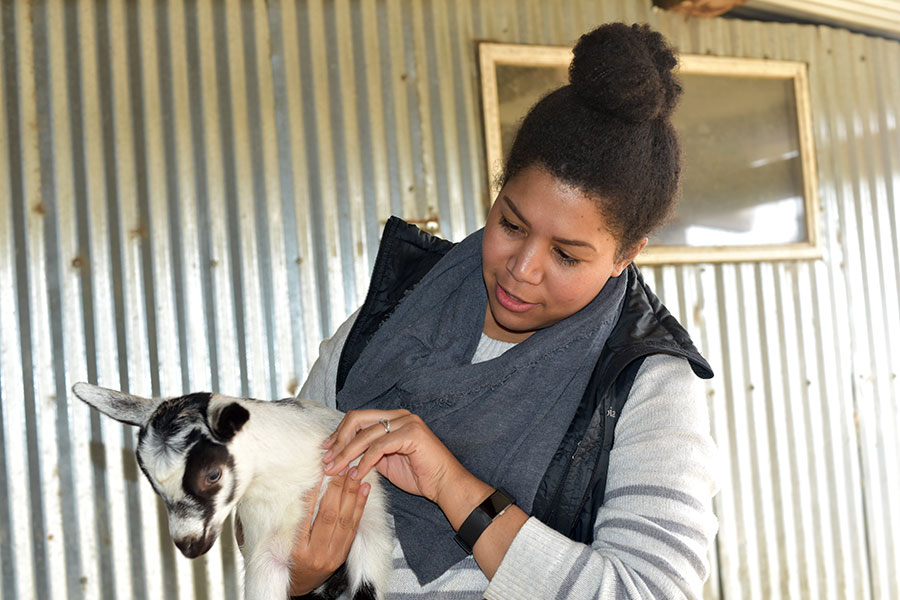

Private dinners
Farmstead dairy cheese is special. You don't often get the meet the goats, or cows, or sheep, and then get to taste the cheese made from their milk. All of our cheeses have their fans. The Monet won a World Gold Medal. People call to ask then the ricotta and feta will be back.





Team offsites
(dup?)